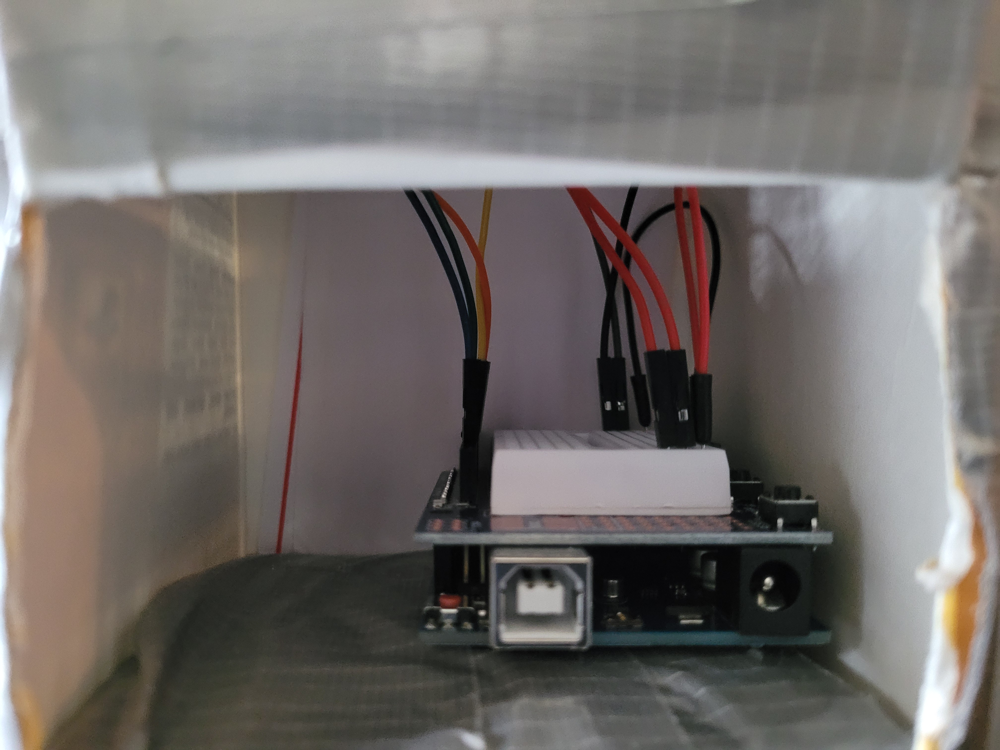
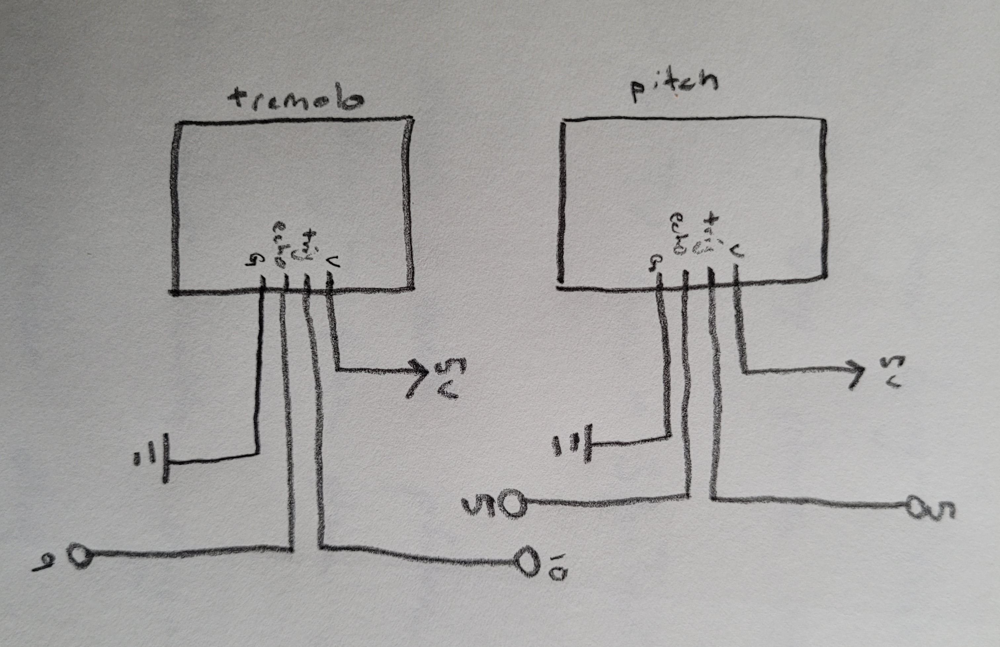

For my final project, I wanted to create an instrument! My final deliverable, the Vibramin, is a mix of the theremin and the vibraphone. In the beginning of this project, I knew I wanted to build some kind
of touchless instrument, similar to a theremin. After exploring other people's projects, I found this to be a reasonable goal.
I originally began with a single ultrasonic speaker that was connected to the piezo speaker. This minimally viable product served as a
decent proof-of-concept, but it sounded terrible. I explored p5.js and found p5.sound. Using p5.sound's well-documented features, I incorporated my
MVP with p5. I then added a second ultrasonic speaker with the idea that I can control volume (amplitude). I added this, but it seemed a bit boring.
This is where the vibraphone element comes in. Vibraphones have fans in the bottom of them that rotate, which in turn, modulates the amplitude. The speed at which
these fans turn change the frequency of modulation. This is in essence what my second ultrasonic speaker does. It modulates the frequency of change in the amplitude of the sound wave.
The final instrument plays a scale, and has the ability to modulate the frequency of volume (amplitude).
At a high level, this project is quite simple. I sent data from my arduino from the two ultrasonic speakers to the web to be manipulated with p5.sound and p5.js.
I mainly used the p5.Oscillator feature. This feature creates a sound wave (I used a "sine" wave) that you can then change the frequency and amplitude. To get the amplitude modulation (AM) effect,
I added a second Oscillator, but I disconnected it so it did not make any sound. I then changed the amplitude of my first wave to equal the second wave. In amplitude modulation, the wave that makes sound
is the carrier wave, and the wave that modulates the amplitude is the modulator. The frequency of the modulator is dependant on the relative position of the second ultrasonic sensor. It modulates between 5-20Hz (too low for the human ear to hear!).
The first ultrasonic sensor controls the frequency of the carrier wave. This determines what note is being played. Finally, to tie it all together, and make it easy to play/troubleshoot, I mapped both values of the ultrasonic sensor to a graph using p5.js.
Hardware
The hardware for this project was pretty straightforward. It is two ultrasonic sensors connected to the arduino. The enclosure is a recycled granola box, some ducktape, and a rubber band.

Inside view of the Vibramin.
Topdown view of the Vibramin.

Schematic of the hardware. The tremolo sensor controls amplitude modulation and the pitch sensor controls what note is being played.
Firmware
This is the firmware for the instrument. It mostly just maps and sends the ultrasonic sensor data to the Web over Serial.
// constants
int echoPin = 5;
int trigPin = 3;
int trigPin2 = 10;
int echoPin2 = 9;
// non-constant values
int distance;
int distance2;
void setup() {
// put your setup code here, to run once:
Serial.begin(9600);
pinMode(trigPin, OUTPUT); // Sets the trigPin as an Output
pinMode(echoPin, INPUT); // Sets the echoPin as an Input
pinMode(trigPin2, OUTPUT); // Sets the trigPin as an Output
pinMode(echoPin2, INPUT); // Sets the echoPin as an Input
}
void loop() {
// -- first ultrasonic sensor --- //
digitalWrite(trigPin, HIGH); // send out the ultrasonic wave
delayMicroseconds(10); // wait 10 microseconds
digitalWrite(trigPin, LOW); // turn the ultrasonic wave off
distance = pulseIn(echoPin, HIGH);
distance = constrain(distance, 100, 1100); // map distance between 100-1100.
// -- second ultrasonic sensor --- //
digitalWrite(trigPin2, HIGH); // send out the ultrasonic wave
delayMicroseconds(10); // wait 10 microseconds
digitalWrite(trigPin2, LOW); // turn the ultrasonic wave off
distance2 = pulseIn(echoPin2, HIGH);
distance2 = constrain(distance2, 100, 1100); // map distance between 100-1100.
// store data into constructed array and sent to serial.
Serial.print("[");
Serial.print(distance);
Serial.print(",");
Serial.print(distance2);
Serial.println("]");
delay(10);
}
Web-based Code
This is where most of the functionality comes in. This code uses the data from Arduino to make the sound waves. It also
creates the graphs that help to visualize what is happening as the user plays the instument.
var serial; // variable to hold an instance of the serialport library
var portName = 'COM4'; //rename to the name of your port
var dataarray = []; //some data coming in over serial!
var xPos = 0;
let playing, freq, osc, mod, freq2
function setup() {
serial = new p5.SerialPort(); // make a new instance of the serialport library
serial.on('list', printList); // set a callback function for the serialport list event
serial.on('connected', serverConnected); // callback for connecting to the server
serial.on('open', portOpen); // callback for the port opening
serial.on('data', serialEvent); // callback for when new data arrives
serial.on('error', serialError); // callback for errors
serial.on('close', portClose); // callback for the port closing
serial.list(); // list the serial ports
serial.open(portName); // open a serial port
let cnv = createCanvas(screen.width, screen.height); // canvas size is screen size.
cnv.mousePressed(playOscillator); // when mouse is pressed on screen, it starts the oscillators.
osc = new p5.Oscillator('sine'); // intialize carrier
mod = new p5.Oscillator('sine'); // initialize modulator
background(0);
}
// get the list of ports:
function printList(portList) {
// portList is an array of serial port names
for (var i = 0; i < portList.length; i++) {
// Display the list the console:
print(i + " " + portList[i]);
}
}
function serverConnected() {
print('connected to server.');
}
function portOpen() {
print('the serial port opened.');
}
function serialError(err) {
print('Something went wrong with the serial port. ' + err);
}
function portClose() {
print('The serial port closed.');
}
function serialEvent() {
if (serial.available()) {
var datastring = serial.readLine(); // readin some serial
var newarray;
try {
newarray = JSON.parse(datastring); // can we parse the serial
if (typeof newarray == 'object') {
dataarray = newarray;
}
console.log("got back " + datastring);
} catch(err) {
// got something that's not a json
}
}
}
function graphData(newData) {
// map the range of the input to the window height:
var yPos = map(newData, 0, 1023, 0, height);
// draw the line
line(xPos, height, xPos, height - yPos);
// at the edge of the screen, go back to the beginning:
if (xPos >= width) {
xPos = 0;
// clear the screen by resetting the background:
background(0);
} else {
// pass
}
}
function draw() {
stroke('rgba(255,255,0,0.8)'); // yellow
graphData(dataarray[0]);
stroke('rgba(0,0,255,0.8)'); // blue
graphData(dataarray[1]);
xPos++;
freq = map(dataarray[0], 100, 1100, 1, 8); // maps frequency from 1-8 as I need 8 notes in the scale.
freq2 = map(dataarray[1], 100, 1100, 5, 20); // maps frequency from 5-20 hz for the modulator wave.
freq = Math.round(freq); // rounds to nearest whole number
if (playing) {
mod.amp(1); // sets amplitude to 1, the highest.
mod.freq(freq2); // sets the frequency of the modulator to equal sensor value mapped from 5-20
osc.amp(mod); // this is the fun! maps the amp of carrier to the entire modulator wave
// this switch case matches the 8 notes in the scale to midi numbers corresponding
// to notes in the scale. midiToFreq() is a helpful function that converts the midi notation to
// exact frequency of the note.
switch (freq) {
case 1:
osc.freq(midiToFreq(58));
break;
case 2:
osc.freq(midiToFreq(59));
break;
case 3:
osc.freq(midiToFreq(62));
break;
case 4:
osc.freq(midiToFreq(63));
break;
case 5:
osc.freq(midiToFreq(64));
break;
case 6:
osc.freq(midiToFreq(66));
break;
case 7:
osc.freq(midiToFreq(69));
break;
case 8:
osc.freq(midiToFreq(70));
break;
}
}
}
function playOscillator() {
// starting an oscillator on a user gesture will enable audio
// in browsers that have a strict autoplay policy like Chrome (my primary browser)
mod.disconnect(); // turns off the modulator wave so it doesn't make noise.
osc.start(); // start carrier
mod.start(); // start modulator
playing = true; // starts playing!
}
Demo
Here is the demo video!
Future Improvements
Overall, I had a lot of fun with this project! Next steps for me would be to explore more of p5.sound. I would like to create a drum track to accompany the
instrument in p5. Also, I used a scale commonly used in indian classical music. North Indian classical music often has a drone instrument called the Tambura
that provides an accompanied harmonic drone that fits into the scale that the soloist is playing in (usually this soloist is a vocalist, sitar, flautist, or other traditional indian instrument).
I think adding some kind of harmonic drone would be really interesting
to see how it plays out with my instrument. I really enjoyed exploring p5.sound and could see myself trying to create fun beats and instruments with it in the future.